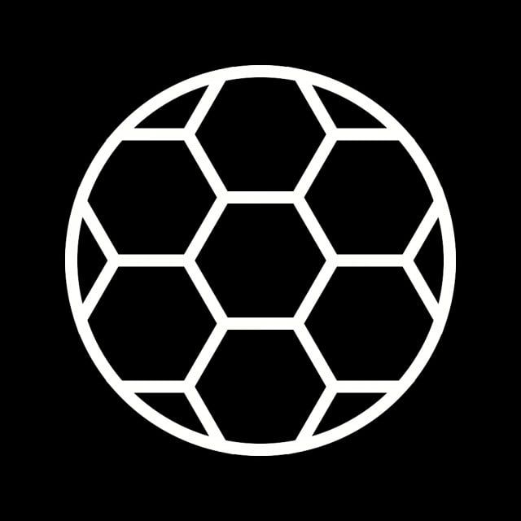
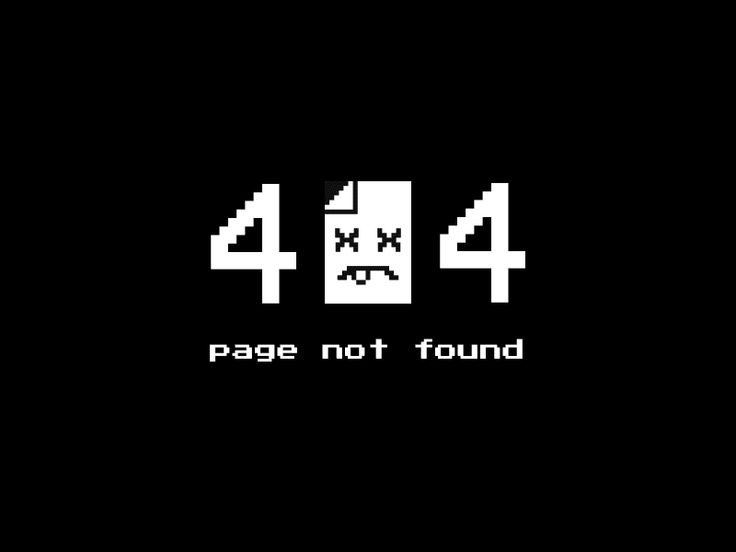
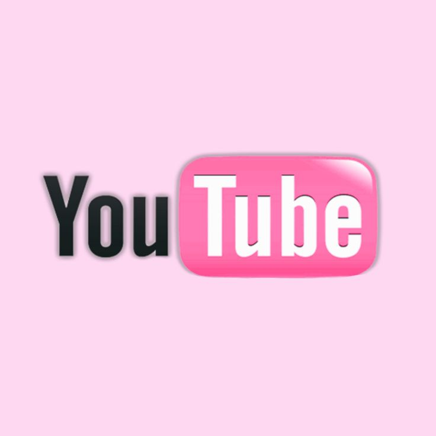
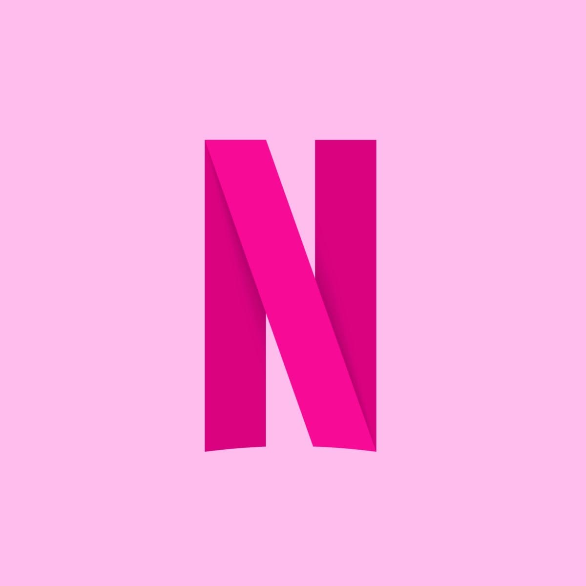

Sports Team Finder
React • API Integration
A sports search application that retrieves live sports team information using TheSportsDB API.
MY WORK
A collection of projects I've built while developing my skills in web development, React, JavaScript and modern web technologies.

React • API Integration
A sports search application that retrieves live sports team information using TheSportsDB API.

React • CSS • JavaScript
A responsive 404 error page created as a collaborative project to provide users with a clear and engaging experience when a page cannot be found.

React • Productivity
A note-taking application inspired by Google Keep, built using reusable React components and state management.
HTML • CSS • JavaScript
A modern, responsive website prototype created for a client project to showcase services and products effectively.

JavaScript • Local Storage
A task management application built with HTML, CSS and JavaScript using Local Storage to save tasks.

HTML • CSS • JavaScript
A YouTube-inspired interface created to practise responsive layouts, navigation and frontend development.

HTML • CSS • Responsive Design
A responsive Netflix-inspired interface created to practise HTML, CSS and responsive design principles.
CASE STUDY